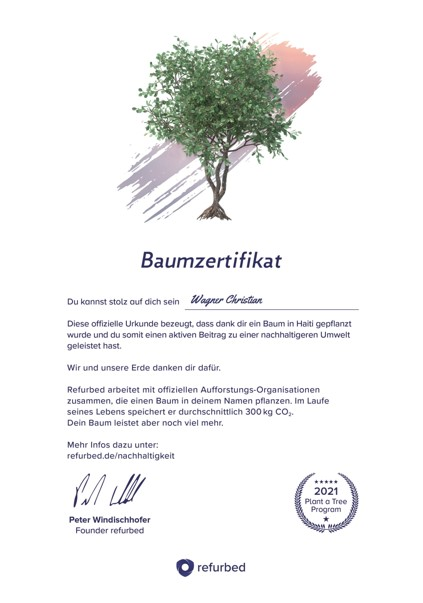

Es ist zwar keine ganz taufrische Idee, aber ich wollte schon immer eine Chat-App entwickeln. Los geht es mit dem Backend.
Verwendete Technologien:
Wenn ich schon mal alles neu mache, dann wird auch der Webserver frisch installiert. Ich verwende einen V-Server von 1blu.de
Die Kombination aus Ubuntu, Plesk und GitHub ermöglicht ein automatisches Deployment der Webseite auf dem Webserver.
Verwendete Komponenten:
Endlich ist die neue, gebrauchte Hardware da. Neben der Schonung unserer Ressourcen wird auch noch ein Baum gepflanzt.

Ich habe die neue, gebrauchte Hardware bei refurbed.de gekauft. Bis jetzt bin ich sehr zufrieden.
Es wird Zeit, sich mal wieder auf die Basics zu konzentrieren. Deshalb habe ich beschlossen JackTools.Net zu überarbeiten und nur pures HTML und CSS zu verwenden. Mal sehen, was da so geht.
Verwendete Komponenten: